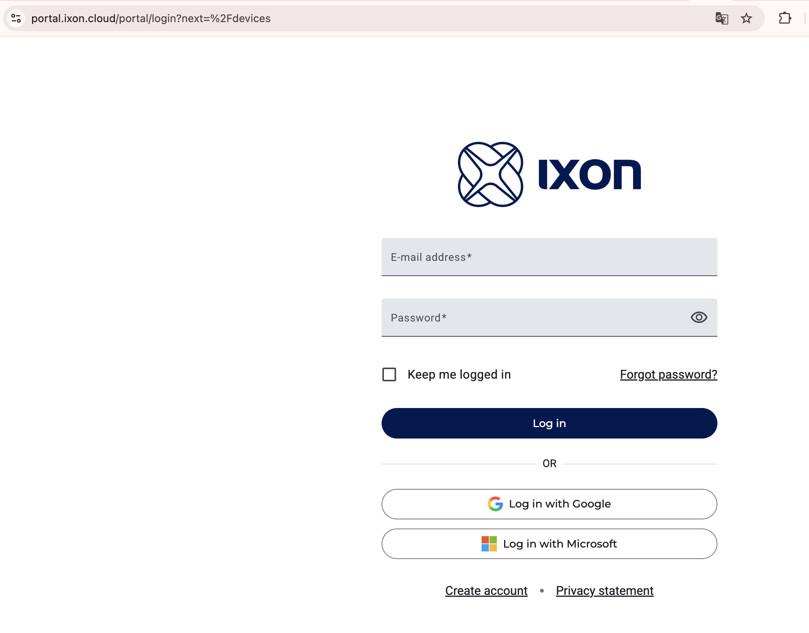
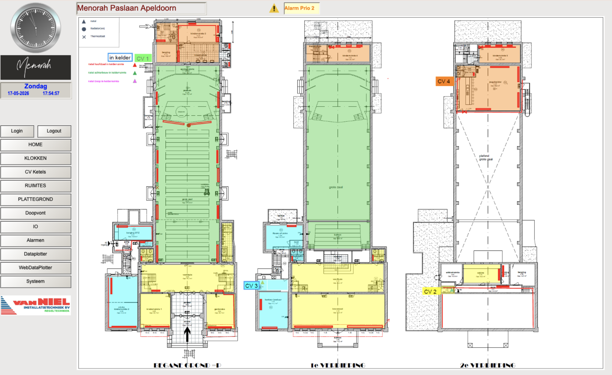

Dit hoofdstuk beschrijft de hardware van de installatie en hoe je toegang krijgt tot het bedienpaneel via het IXON Cloud platform van Van Niel.
Hardware overzicht
PLC Controller
Installatie
Toegang tot het portaal
Inloggen via IXON Cloud

📷 screenshots/portaal_login.png — nog toe te voegen- Ga naar portal.ixon.cloud en log in met je e-mailadres en wachtwoord, of via Google of Microsoft account
- Je ziet het devices overzicht met Menorah als enig apparaat — status groen = online
- Klik op de rode knop Bedienpaneel om het portaal te openen
- Het portaal opent in een nieuw browsertabblad met het hoofdscherm van de Menorah installatie
Het portaal heeft twee niveaus: zonder inloggen kun je de meeste schermen bekijken en het comfort setpoint per ruimte aanpassen. Voor configuratiewijzigingen (stooklijn, optimizer, stookgrenzen) is een admin-login vereist via de Login knop in het portaal. Admin credentials zijn beschikbaar via Van Niel.
Portaal navigatie

Het portaal toont linksboven een analoge klok en de datum. Links staat het navigatiemenu. Rechtsboven verschijnt een oranje Alarm Prio 2 melding als er actieve alarmen zijn.
| Menu item | Functie | Toegang |
|---|---|---|
| HOME | Zelfde als hoofdscherm — foto gebouw | Iedereen |
| PLATTEGROND | Gebouwplattegrond met CV locaties en radiatoren | Iedereen |
| KLOKKEN | Stooktijden instellen per ruimte | Iedereen (lezen + aanpassen) |
| CV Ketels | Status en configuratie van de vier CV ketels | Status: iedereen / Config: admin |
| RUIMTES | Temperatuuroverzicht en setpoints per ruimte | Iedereen (setpoint aanpasbaar) |
| Doopvont | Aparte ketel voor het doopbad | Iedereen |
| IO | Overzicht alle sensoren en actuatoren | Iedereen (lezen) / admin (blok functie) |
| Alarmen | Actieve alarmen en alarmgeschiedenis | Iedereen |
| Dataplotter | Configuratie van de datalogger | Iedereen |
| WebDataPlotter | Historische grafieken van alle meetwaarden | Iedereen |
| Systeem | E-mail instellingen, alarm doormelding, project info | Admin |
Gebouwplattegrond
De plattegrond in het portaal toont alle drie verdiepingen met de locaties van de CV ketels en radiatoren.

📷 screenshots/plattegrond.png — nog toe te voegenDe vier CV installaties zijn als volgt verdeeld:
| CV | Locatie | Bedient |
|---|---|---|
| CV 1 | Kelder | Grote Zaal |
| CV 2 | 2e verdieping voorzijde | Bovenzaal, hal boven, toiletten boven, hal beneden, toiletten beneden |
| CV 3 | Kantoor Bestuur, 1e verdieping | Beide kantoren, kinderruimten voor, toiletten en hal achterbouw |
| CV 4 | Kelder (staat verkeerd op plattegrond) | Jeugdzolder en kinderruimten achter |